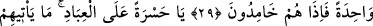
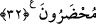

KEŞKE KAVMİM BİLSEYDİ!
26-27. “Gir cennete!” denildi. “Keşke Rabbimin beni bağışladığını ve beni ikrama
mazhar olanlardan kıldığını kavmim bilseydi!” dedi.
28. Biz ondan sonra, onun milletini helâk etmek için üzerlerine gökten herhangi
bir ordu indirmedik ve indirecek de değildik.
29. (Onları helâk eden) korkunç sesten başka bir şey değildi. Birdenbire
sönüverdiler.
30. Ne yazık şu kullara! Onlara bir peygamber gelmeye görsün, ille de onunla
alay etmeye kalkışırlar.
31. Müşrikler görmüyorlar mı ki, onlardan önce nice kavimler helâk ettik. Onlar
tekrar dönüp de bunlara gelmezler.
32. Elbette onların hepsi (kıyamet gününde) karşımızda hazır bulunacaklar.
“Gir cennete!” denildi.” Habîbü’n-neccâr’ı öldürdükleri zaman cennete girdiği
sırada diğer şehitlere söylendiği gibi ikram olarak ona da bu söz söylendi. Bu sözün
mânâsının cennete girme müjdesi olduğu, onun cennet ehlinden olup yeniden
diriltildikten sonra cennete gireceği anlamına geldiği de söylenmiştir. Yoksa bu söz ona
hemen cennete girmesinin emredilmesi mânâsına değildir. Zira yapılanların karşılığı
yeniden diriltilmeden sonradır.
Allah Teâlâ burada “ (ona denildi)” buyurmadı. Çünkü kime söylendiği zaten
belli olduğundan maksad kime söylendiğini değil, pek hızlı bir şekilde ne söylendiğini
açıklamaktır.
Bu cümle Habîbü’n-neccâr’ın söz ve hâlinin hikâyesinden kaynaklanan mukadder
soruya
cevap
mâhiyetinde
başlangıç
cümlesidir.
Sanki
“Onun
dîninde
salâbet/sebatından ve Allah rızâsı için canını cömertçe fedâ etmesinden sonra Rabbine